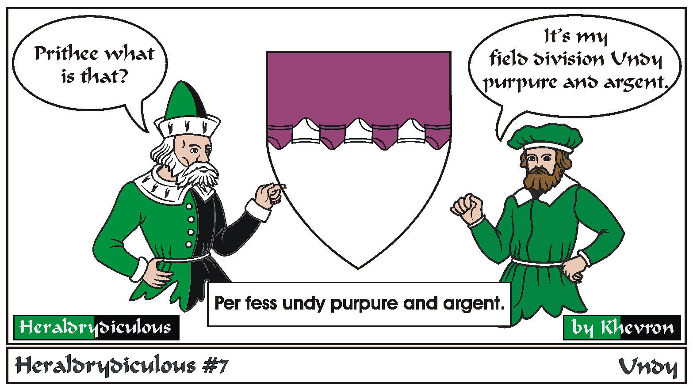

Heraldrydiculous
by Khevron

Undy is a complex line of division but the actual design is the same as wavy. A similar design visually is "Urdy".
Lines of division are by default "Straight".
Others include: Indented, Dancetty, Rayonné, Wavy, Engrailed, Invected, Nebuly, Potenty, Embattled & Bretessé, Raguly, Dovetailed.
Enarched, while not a complex line, simulates the curve of a shield, but for comparison purposes, is the same as the plain line.

Previous Next
Heraldrydiculous Home